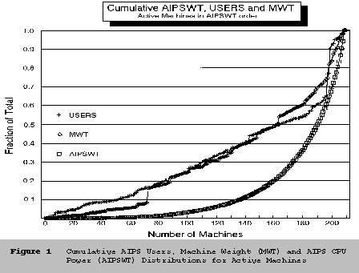
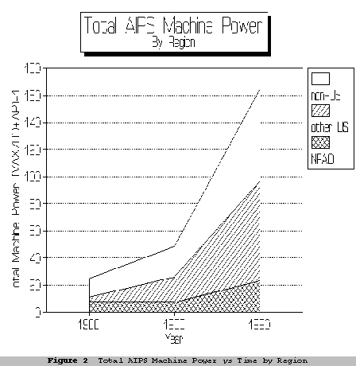
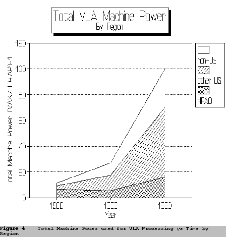
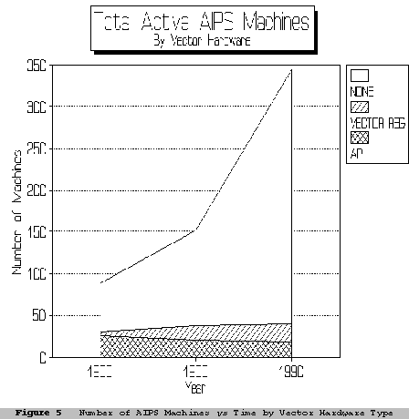
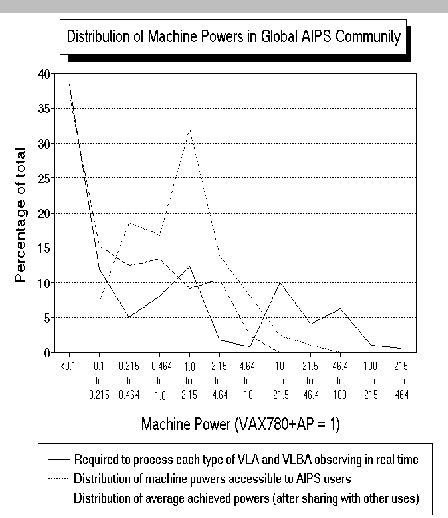

![[AIPS]](http://www.cv.nrao.edu/aips/aips.gif)
![[NRAO]](http://www.cv.nrao.edu/aips/nraologo_tiny.gif)
|
|
AIPS Memo 70 |
|
Alan Bridle and Joanne Nance
National Radio Astronomy Observatory
Charlottesville, Virginia 22903-2475, U.S.A.
We use data from the AIPS Site Surveys to assess the size and geographical distribution of the machine power that is actively devoted to AIPS data processing, and its growth between the surveys. Consequences for planning the NRAO's AIPS effort are discussed. The main conclusions are:
The 1990 AIPS Site Survey questionnaires were sent to 238 site managers (Contact People CP's) whose orders of AIPS distribution tapes or documentation suggested that AIPS might be installed at their sites. By the cut-off date for this report (15 March 1991), 156 CP's (66% of the total) had responded; 74 other CP's had responded only to earlier surveys. We therefore have some data for 230 AIPS sites (97% of the possible total).
The survey responses provide usable data on 335 computer systems on which AIPS installations have been attempted or considered at some time. This memo deals only with the 209 systems whose CP's reported both a non-zero number of AIPS users and the fraction of their CPU time that is devoted to running AIPS. These are the computer systems whose AIPS use is "measurable" from the Survey responses; we call them the 209 "active" systems. (The number of individual CPUs is 345, but so many systems are now networked clusters or server-workstation complexes that it is now impractical to document all CPUs separately.) The survey data for 204 of these active systems(1)1 are listed fully in the 1991 AIPS Site Directory (AIPS Memo No. 69). We therefore repeat only a few interesting subsets here.
The 209 active AIPS systems are at 142 sites in 17 countries -- Australia (6 sites), Brazil (1), Canada (9), China (4), Denmark (1), France (5), Germany (3), Hungary (1), India (5), Israel(1), Italy (4), Japan (2), The Netherlands (4), Spain (1), Sweden (2), the U.K. (5) and the U.S. (88). Eighty of the active sites in the U.S. are outside the NRAO.
| Operating System | non-U.S. | NRAO | U.S.* | ALL |
|---|---|---|---|---|
| UNIX | 40(264) | 12(438) | 63(358) | 115(1060) |
| VMS | 36(168) | 3(17) | 53(246) | 92(431) |
| Other | 2(36) | 0 | 0 | 2(36) |
| ALL | 78(468) | 15(455) | 116(604) | 209(1527) |
*"U.S." includes all non-NRAO U.S. sites.
In this memo, we are interested in the distribution of the AIPS resources both geographically and by type of operating system. Table 1 therefore summarizes the distribution of the 209 active systems (and their users) in both "parameter spaces". The numbers in parentheses are the numbers of AIPS users associated with the systems.
The grand total of users includes some individuals more than once because all AIPS users who reduce data at the NRAO once or more a year and have AIPS systems at home are counted both at the NRAO and at home. If (a) all NRAO visitors also had AIPS at home, and (b) no AIPS users were counted twice elsewhere, the total of 1527 "users" would represent about 1200 individuals. In practice, not all NRAO users have AIPS at home, and some will be counted more than once elsewhere. The actual number of individual AIPS users is probably between 1200 and 1400, and has probably grown by about 20 to 30% since 1988.
Outside the NRAO, the average number of AIPS users per system is about 6. At the NRAO, it is about 30. This disparity reflects the large number of VLA users who visit New Mexico and Charlottesville to reduce their data with AIPS, and who are therefore counted in the annual user total for the NRAO.
Table 1 shows that UNIX is now the most common operating system at AIPS sites. Fifty-five percent of all active AIPS machines run some version of it. Section 3 of this report shows that VMS, despite hosting 44% of all systems that now run AIPS (92 systems), now hosts only 6% of the total machine power devoted to AIPS. The role of VMS in the AIPS community has diminished steadily since the 1986 site survey. Section 5 looks at the growth history of the AIPS community in detail.
To estimate the total machine power devoted to AIPS processing worldwide, we asked each CP to list for each machine the CPU type, array processor (AP) type, if any, and the fraction of its CPU use that is devoted to AIPS processing. We then assigned every machine an "AIPS weight" AIPSWT that estimates the average "horsepower", in (VAX780 + FPS120B AP) full-time equivalents, that is in use for AIPS computations on that machine. For each individual computer, AIPSWT is the product of a generic "machine weight" MWT and its CP's estimate of the fraction of the machine's time that is devoted to AIPS processing.
Table 2 lists the "machine weights" MWT assigned to different CPU and AP combinations for this memo. They range from 0.1 to 40 for the least and most powerful machines actively running AIPS. The "VAX780+AP" unit, which has normalized this comparison since 1985, is therefore still an appropriate choice even though the VAX780+AP combination itself is almost extinct.
We have incorporated recent AIPS benchmarking results (see Appendix B for details) into Table 2. Because the performance of AIPS in Convex C-1's and in some other machines has recently been improved (by code optimization), some of the machine weights used in this version of the table differ in detail from those assigned to the same CPUs in earlier AIPS Site Surveys.
| CPU Type | F | N | V | Y |
|---|---|---|---|---|
| Alliant FX/8-3CE | 3.9 | |||
| Alliant FX/8-4CE | 5.3 | |||
| Alliant FX/80 | 1.95 | |||
| Apollo DN3000 | 0.1 | |||
| Apollo DN320 | 0.1 | |||
| Apollo DN660 | 0.1 | |||
| Convex C-1/XL | 3.5 | |||
| Convex C-1/XP | 4.4 | |||
| Convex C-201 | 8.2 | |||
| Convex C-210 | 9.7 | |||
| Convex C-220 | 19 | |||
| Convex C-240 | 38 | |||
| Cray X-MP/4 | 40 | |||
| DEC uVAX II | 0.23 | |||
| DEC uVAX II/GPX | 0.23 | |||
| DEC uVAX3100 | 0.95 | |||
| DEC uVAX3200 | 0.68 | |||
| DEC uVAX3300 | 0.6 | |||
| DEC uVAX3400 | 0.6 | 1.0 | ||
| DEC uVAX3600 | 0.68 | |||
| DEC uVAX3800 | 0.3 | |||
| DEC VAX4000 | 0.25 | |||
| DEC VAX6310 | 0.95 | |||
| DEC VAX6410 | 1.75 | 1.9 | ||
| DEC VAX750 | 0.15 | 0.9 | ||
| DEC VAX780 | 0.25 | 1.0 | ||
| DEC VAX785 | 0.4 | 1.0 | ||
| DEC VAX8200 | 0.25 | |||
| DEC VAX8350 | 0.58 | |||
| DEC VAX8530 | 1.0 | 1.2 | ||
| DEC VAX8600 | 1.05 | |||
| DEC VAX8650 | 1.7 | |||
| DEC VAXxxxx | 0.2 | |||
| DECstation 3100 | 2.62 | |||
| DECstation 5000 | 4.3 | |||
| DG 4000 Server | 0.8 | |||
| Fujitsu M380S | 3.4 | |||
| Fujitsu VP50 | 7.7 | |||
| IBM RS-6000/530 | 5.6 | |||
| Masscomp MC5500 | 0.19 | |||
| SG Iris 4D/20 | 1.5 | |||
| Stellar 1000 | 6.6 | |||
| Sun-3/160 | 0.41 | |||
| Sun-3/180 | 0.41 | |||
| Sun-3/260 | 0.63 | |||
| Sun-3/260C | 0.63 | |||
| Sun-3/280S | 0.63 | |||
| Sun-3/60 | 0.51 | |||
| Sun-4/110 | 0.95 | |||
| Sun-4/260 | 1.3 | |||
| Sun-4/280 | 1.3 | |||
| Sun-4/280S | 1.3 | |||
| Sun-4/330 | 1.9 | |||
| Sun-4/370 | 1.9 | |||
| Sun-4/380 | 2.5 | |||
| Sun-4/390 | 2.5 | 1.9 | ||
| Sun-4/40 | 1.9 | |||
| Sun-4/490 | 2.55 | |||
| Sun-4/60 | 1.6 | |||
| Sun-4/60GX | 1.6 | |||
| Sun-4/65 | 1.9 | |||
| Sun-4/65GX | 1.9 | |||
| Sun-4/75 | 3.0 |
Columns:
F -- with pipelined Floating Point Accelerator
N -- with no Array Processor
V -- vector registers
Y -- with Array Processor
The "machine weights" in Table 2 are based on a mix of scalar and vector performance, calibrated by timings from the AIPS medium DDT test for a small but representative sample of machines (Appendix B). We base our scale on the medium DDT test because it is the only part of the DDT suite that can be run in reasonable times on the entire range of machines: the large test takes too long on the least powerful machines and the small test takes too little time on the most powerful ones. We do not have access to DDT timing data for many types of machine. For these, we have estimated MWT by scaling from the DDT timings of roughly comparable machines, using either the manufacturers' own product comparisons or published LINPACK benchmarks.
The actual throughput of a machine also depends on disk configuration and space, on the number of simultaneous users, on the mixture of AIPS tasks that is used, and other factors. The "machine weights" are therefore but rough estimates of relative AIPS performance, and may differ from machine rankings that apply to other code. If any Site Managers believe that the actual AIPS performance of their machine is seriously misrepresented in Table 2, please send us your medium DDT timings so that we can update and correct this table.
Appendix A lists the equivalent full-time (VAX780+AP)'s devoted to AIPS at 142 "active" AIPS sites whose CP's gave us permission to publish their data. The table lists includes 204 computer systems, alphabetically by institute and by country. MWT is the machine weight from Table 2. AIPSWT is MWT times the fraction of the machine's time that is devoted to AIPS; AIPSWT thus measures the equivalent full-time CPU power devoted to AIPS on the machine (treating an AP as part of the "CPU" here). #U is the number of AIPS users (the annual totals given by the Site Managers for their site as a whole have been distributed across their active machines in proportion to the machine weights), and DISK is the AIPS disk space in Gbytes. AV.WT indicates the average "resource per active AIPS user", obtained by multiplying the machine weight MWT by the AIPS disk space in Gbytes and dividing by the average number of simultaneous AIPS users on the machine. Thus, AV.WT = 1 for a machine that provides its average active AIPS user with the computing power of a (VAX780+AP), and 1 Gbyte of disk space, regardless of how much of the machine's time is actually used for AIPS. (Factors such as disk space relative to the size of the typical problem, other use of the machine, presence of a TV or laser printer, on-site AIPS and systems expertise, also affect a site's ability to service its AIPS users, but are hard to quantify.)
Table 3 gives the distribution of equivalent full-time machine power that is in use for AIPS at all 145 "active" sites, by geographical area and by operating system, in (VAX780+AP) units.
| Operating System | non-U.S. | NRAO | U.S. | ALL |
|---|---|---|---|---|
| UNIX | 58.69 | 21.97 | 68.84 | 149.5 |
| VMS | 4.77 | 0.91 | 4.54 | 10.2 |
| Other | 5.01 | 0 | 0 | 5.0 |
| ALL | 68.46 | 22.88 | 73.38 | 164.7 |
The following aspects of Appendix A and Table 3 are noteworthy:

The curves for USERS and MWT are similar, i.e. the overall machine power MWT is generally distributed quite like the users. This presumably reflects economics in the sense that funding for computing resources is distributed roughly in the same manner as the number of users. AIPSWT, the machine power that is in use for AIPS, is much more concentrated to a subset of the machines that are substantially dedicated to AIPS, however. For example, Figure 1 shows that 50% of the AIPS machine power comes from 19 systems that service almost 40% of all AIPS users; 90% of the AIPS machine power comes from 73 systems that service about 61% of the users. Although these distributions are slightly more egalitarian than those of two years ago (when 50% of the machine power was contributed by just 10 systems servicing 37% of the users) they still show that most of the AIPS machine power is concentrated to a subset of less than half of the AIPS sites. The next section therefore looks at the distribution of AIPS machine power per AIPS user in detail.
| Country | Total.AIPSWT | Users | AIPSWT/User |
| The.Netherlands | 15.61 | 36 | 0.43 |
| Sweden | 3.07 | 11 | 0.28 |
| Australia | 19.93 | 80 | 0.25 |
| China | 5.69 | 27 | 0.211 |
| U.K. | 6.32 | 45 | 0.140 |
| Japan | 5.03 | 38 | 0.130 |
| Canada | 4.94 | 39 | 0.127 |
| U.S..(non-NRAO) | 73.38 | 604 | 0.121 |
| Italy | 3.33 | 29 | 0.115 |
| Israel | 0.16 | 3 | 0.053 |
| Germany | 2.83 | 54 | 0.052 |
| NRAO | 22.88 | 455 | 0.050 |
| India | 1.16 | 54 | 0.022 |
| Brazil | 0.02 | 1 | 0.020 |
| Denmark | 0.058 | 6 | 0.010 |
| Spain | 0.097 | 10 | 0.0097 |
| France | 0.228 | 32 | 0.0070 |
| Hungary | 0.0022 | 2 | 0.0011 |
Table 4 shows how different "countries" (again separating the NRAO from the rest of the U.S.) rank when the total machine power devoted to AIPS is normalized by the total number of AIPS users in the country. Although many other factors influence each site's ability to service its AIPS users (and one other is examined below) high ratios of AIPSWT/User in these tables are more desirable than low values. The ranking by AIPSWT/User can be thought of as measuring the ability to perform a given number of computations with AIPS per user, averaged annually over all AIPS users in the country. High values of AIPSWT/User give a potential for high throughput per user, or for efficient use of astronomers' AIPS time. Low values imply low productivity, or excessive contention for AIPS time, for the average user.
Comparing Table 4 with the corresponding table from 1988 shows that the AIPSWT/User ratio at the NRAO has increased by a factor of about 4.5. The numbers of AIPS users at non-NRAO sites has increased slightly in the U.S. and outside (from 481 to 604 and from 417 to 468 respectively), but the machine power devoted to AIPS has increased much faster, so that the average AIPSWT/User at the non-NRAO sites has roughly tripled in the past two years, much as it did in the previous two-year period. Despite these improvements, the average AIPSWT/User in the U.S. remains modest relative to that in many countries with active astronomical communities, particularly The Netherlands, Sweden and Australia. The non-NRAO sites in the U.S. rank eighth, and the NRAO twelfth, in this country-by-country comparison, as they did in 1988. So, although the average AIPS machine power per user at non-NRAO U.S. sites has increased by almost a factor of ten since the end of 1986 (when it was 0.0126), more substantial gains have been made elsewhere, most notably in Sweden, Australia and The Netherlands. The average machine power per user in the U.S. should increase again by a factor between 2 and 3, and at the NRAO by a factor between 6 and 10, to reach competitive levels.
Other notable changes in Table 4 since 1988 are (1) the arrival of a Convex C-220 and several major workstations at Leiden, increasing the AIPS CPU power per user there by a factor of six and so moving the Dutch average to the top of this Table, (2) a major increase in the AIPS machine power per user in China, where the acquisition of workstations has outraced the addition of new AIPS users.
Table 4 emphasizes the average "CPU" power that is available to each country's entire AIPS user community --- a "global" measure. It is also important to look at how well individual machines can support AIPS users while they are actually computing (i.e., at how well each machine concentrates resources on an individual user's problem for the fraction of time that the user has access to it). The average fractional use of the machines for AIPS is the ratio of the total worldwide AIPSWT (164.7) to the total MWT (515.4), or about one-third, close to its value in 1988. Of the 209 "active" systems, 75 (36%) reported that more than one-third of their CPU time is dedicated to AIPS (both the proportion and the number of such systems has increased since 1988, when the corresponding values were 48 machines and 31%). These 75 "highly active" AIPS systems account for 79% of the total machine power that is used for AIPS (up from 69% in 1988), and for 75% of the machine power that is used for VLA-related AIPS work (up from 58% in 1988). We therefore use these 75 systems to assess the distribution of "concentrated AIPS power".
Of the 75 "highly active" systems, 48 are in the U.S., including 9 at the NRAO. The fraction of these machines that is in the U.S. is almost identical to that in 1988. The 27 "highly active" AIPS machines outside the U.S. are distributed as follows: 7 in Australia, 5 in each of Canada and The Netherlands, 3 in China, 2 in the U.K. and 1 in each of Germany, India, Italy, Japan and Sweden. The Australian, Dutch and Chinese representation in this group has grown faster than that of other countries since 1988.
Of the 75 "highly active" systems, 62 run under UNIX, 12 under VMS and 1 (Fujitsu) under another OS. The concentration of machine power to UNIX among these systems is much more dramatic than the machine count, however --- 93% of the AIPS machine power in these highly active AIPS machines is now UNIX-based.
| SITE | COUNTRY | CPU | AP | MWT | OS | DISK | #U | AV.WT |
|---|---|---|---|---|---|---|---|---|
| Nobeyama Radio Obs. | JAPAN | Fujitsu VP50 | V | 7.7 | other | 2.5 | 32 | 19.0 |
| Onsala Space Obs. | SWEDEN | Convex C-1/XL | V | 3.5 | UNIX | 1.7 | 7 | 5.95 |
| Kapteyn Institute | NETHERLANDS | Sun Cluster | N | 7.6 | UNIX | 2.5 | 9 | 4.75 |
| Australia Telescope | AUSTRALIA | Sun-4/65 | N | 1.9 | UNIX | 2.4 | 6 | 4.56 |
| Australia Telescope | AUSTRALIA | Sun-4/65GX | N | 1.9 | UNIX | 2.4 | 6 | 4.56 |
| SAO Cambridge (1) | USA | Convex C-1/XP | V | 4.4 | UNIX | 2.5 | 6 | 4.40 |
| SAO Cambridge (2) | USA | Convex C-1/XP | V | 4.4 | UNIX | 2.5 | 6 | 4.40 |
| Columbia U. Astron. | USA | Convex C-1/XP | V | 4.4 | UNIX | 1.0 | 10 | 4.40 |
| NRAO NRAO1 | NRAO | Convex C-1/XP | V | 4.4 | UNIX | 5.8 | 21 | 4.25 |
| Jodrell Bank | UK | Alliant FX/8 | V | 5.2 | UNIX | 1.6 | 23 | 4.16 |
| NRL Radio Astron. | USA | Alliant FX/8 | V | 3.9 | UNIX | 4.0 | 15 | 3.90 |
| NRAO YUCCA | NRAO | Convex C-1/XP | V | 4.4 | UNIX | 4.2 2 | 05 | 3.08 |
| NRAO LEMUR | NRAO | IBM RS-6000 | N | 5.6 | UNIX | 0.8 | 20 | 2.99 |
| U. Iowa | USA | Sun Cluster | N | 3.8 | UNIX | 1.5 | 8 | 2.85 |
| NRAO CHOLLA | NRAO | Convex C-1/XP | V | 4.4 | UNIX | 3.5 1 | 75 | 2.80 |
| Haystack Obs. | USA | Sun-4/65 | N | 1.9 | UNIX | 1.4 | 2 | 2.66 |
| Northwestern U. | USA | Sun-4/40 | N | 1.9 | UNIX | 1.4 | 4 | 2.66 |
| MPIfR Bonn | GERMANY | Convex C-1/XP | V | 4.4 | UNIX | 1.8 | 30 | 2.64 |
| U. Minnesota | USA | Sun Cluster | N | 4.2 | UNIX | 2.5 | 15 | 2.63 |
| LLNL-IGPP | USA | Sun-4/380 | F | 2.5 | UNIX | 1.8 | 2 | 2.25 |
Table 5 lists the "top twenty" among these machines, in decreasing order of AV.WT, a measure of the average AIPS resource per simultaneous AIPS user. (AV.WT is the machine or cluster weight MWT times AIPS disk space DISK in Gbytes, divided by the average number of simultaneous AIPS users at times when the machine is being used for AIPS and (in clusters) divided further by the number of machines in the cluster). The normalization for clusters accounts for the fact that no one AIPS computation can, at present, be distributed across all machines in the cluster.
The twenty systems listed in Table 5 are where the largest AIPS resources (in terms of computing power and disk space together) are available to individual users while they are actually running AIPS on these "highly active" machines. The maximum resource that can be concentrated on any project by a single computer is measured by MWT*DISK, which is usually greater than AV.WT. If, however, an AIPS site allows more users to have data on disk than are simultaneously running tasks, the average resource per active user can be less than AV.WT. AV.WT is thus a reasonable measure of the average computing resource per active AIPS user for many sites.
The proportion of U.S. machines in Table 5 (64%) is the same it was in the "top ten" from 1988. The domination by UNIX systems also continues. Table 5's view of the most concentrated AIPS resources differs in one significant respect from the "top ten" of 1988, however. Only about half of the systems in Table 5 use vector registers, and powerful scalar RISC workstations (or clusters of such workstations) with moderate disk resources now dominate the table at AV.WT < 3.
Even these "top twenty" machines provide modest values of AV.WT relative to many radio astronomical data processing needs, especially those of VLA spectral line observing. Individual projects often need about 1 Gbyte of disk storage for reductions that take several days of CPU time in a machine with MWT=4 or 5. It is therefore an indication of the overall underfunding of VLA data processing around the world that still only 6 sites have systems with AV.WT >= 4.4, the equivalent for a single user of a Convex C-1/XP with 1 Gbyte of disk for AIPS data. The disparity of funding from site to site is evidenced by the fact that two of these six sites each have two such machines. The relatively low cost of the most powerful RISC workstations could soon transform this picture, however, if sites that obtain such machines also couple them to many-Gbyte disk systems at high I/O bandwidth.
Table 6 shows the growth of several measures of worldwide AIPS use from the end of 1986 to the end of 1990. The highest growth rates in AIPS CPU use were again at the non-NRAO U.S. sites (see Figure 2), particularly for VLA data reduction, for which the 1988-to-1990 increase was almost twice the NRAO's 1990 capacity. The machine power devoted to AIPS inside the NRAO has grown at exactly the worldwide average rate since 1988, after several years of zero growth(2)2. The use of AIPS for non-VLA radio work has grown especially rapidly at the NRAO, due to an increased emphasis on AIPS use for VLBI code development and data processing. AIPS CPU use for non-radio applications has grown rapidly outside the U.S.
Some noteworthy trends exhibited by Table 6 are:
1990/1988
1986 1987 1988 1990 ratio
Total AIPS machine power
NRAO 7.25 6.32 6.73 22.88 3.40
other U.S. 3.65 11.7 19.1 73.38 3.84
non-U.S. 14.3 19.5 22.5 68.46 3.04
Total 25.2 37.5 48.4 164.7 3.40
AIPS power for VLA
NRAO 6.56 5.59 5.23 16.0 3.06
other U.S. 2.47 9.16 12.4 54.5 4.39
non-U.S. 2.48 7.29 9.48 30.0 3.16
Total 11.5 22.0 27.1 100.5 3.71
AIPS power, other radio
NRAO 0.33 0.53 1.34 6.47 4.82
other U.S. 0.46 0.61 4.11 11.4 2.77
non-U.S. 11.7 11.8 12.3 34.0 2.76
12.4 12.9 17.8 51.9 2.92
AIPS power, nonradio
NRAO 0.35 0.20 0.16 0.40 2.50
other U.S. 0.72 1.89 2.64 7.49 2.84
non-U.S. 0.20 0.46 0.64 4.43 6.92
1.27 2.55 3.43 12.3 3.59
Host operating systems
VMS 7.29 9.40 9.64 10.2 1.06
UNIX 7.87 21.4 32.6 149.5 4.58
Other 10.1 6.72 6.13 5.01 0.82
25.2 37.5 48.4 164.7 3.40
Vector hardware
Separate AP 5.44 6.17 5.48 4.35 0.79
Vector Registers 16.3 25.0 31.5 53.6 1.70
21.7 31.2 37.0 58.0 1.58

1990/1988
1986 1987 1988 1990 ratio
Active machines 90 132 153 345 2.25
VMS 73 99 101 119 1.18
UNIX 12 27 48 224 4.67
Other 5 6 4 2 0.50
Separate AP 26 25 20 18 0.90
Vector registers 5 12 18 22 1.22
No vector hardware 59 95 115 305 2.65

First, although the machine power devoted to VLA data processing at the NRAO tripled since 1988, it also fell to its lowest "share" ever of the worldwide total (16%, see Figure 4). This is because the AIPS machine power used for VLA data processing at other sites in the U.S. grew much faster, more than quadrupling since 1988. This shifting of the VLA data reduction burden in the U.S. from the NRAO to its users has had advantages for the users. These include: the ability to work on their VLA data when it is convenient to do so without traveling to the NRAO, and increased year-round involvement of graduate and undergraduate students in VLA data processing at their home institutions.
Second, the fraction of the NRAO's AIPS use that is devoted to VLA data processing has fallen to 70% from a high of 92% in 1986. This reflects an increase in the use of AIPS at the NRAO for VLBI data processing and VLBA code development (and to a lesser extent for single-dish data processing). Previous site surveys had shown a similar decrease in emphasis on VLA data reduction at other U.S. AIPS sites, but this trend has now reversed: the fraction of all AIPS CPU use that is devoted to VLA data reduction at other U.S. sites grew to 74% in 1990 from a low of 65% in 1988. This may have come about because AIPS can now be used to calibrate VLA data at users' home installations.
Third, the uses of AIPS for different types of data reduction are significantly different inside and outside the U.S. The fraction of non-U.S. AIPS use that is devoted to VLA data processing is only 44%. This lower emphasis on VLA data processing in other countries reflects their greater use of AIPS to reduce data from other radio telescopes, particularly in Australia, Holland and the U.K. Use of AIPS outside the U.S. to process non-radio data is also increasing more rapidly than it is inside the U.S.
The fraction of the active AIPS machine power represented by systems with separate AP's has declined from 55% in 1985 to 2.6% in 1990, and the absolute machine power contributed by them has also declined. The AP microcode for AIPS has been frozen for several years and will remain so, absent new hardware developments that might revitalize this almost-extinct AIPS architecture.

In the 1988 survey, 75% of all AIPS installations had no vector-register hardware. Such "naked scalar machines" were important to the AIPS community then for two reasons --- Sun-3 workstations and MicroVAXes had low entry level costs, and they offered AIPS users a large and predictable share of their resources. These two factors made naked scalar machines attractive in 1988 even though many of them could not then handle the more computationally-intensive AIPS data reductions in reasonable times. The last two years have seen large increases in the machine power available at modest cost in naked scalar machines, so their importance to AIPS users has grown rapidly (see Figure 5). The less powerful machines are often used as personal workstations attached to a hierarchical network that includes more powerful processors.
The naked scalar machine count was dominated in 1988 by MicroVAXes and Sun-3 workstations. It is now dominated by Sun-4 workstations, particularly SPARC stations, with a few powerful DECstations and IBM workstations also evident. The 1990 data show 32 Sun-3's in active use for AIPS (up from 22 in 1988, but most of these are now in networks with more powerful partners or servers rather than stand-alone systems). There are now at least 115 Sun-4's in active use for AIPS (compared with only one in 1988). Many of these new Sun-4's are in clusters or networks. Fortunately, there are now several Sun-4's in use for AIPS at the NRAO, so the AIPS group can test AIPS installation and performance on these systems. The advent of even more powerful "superscalar" RISC workstations from vendors such as IBM and HP/Apollo suggests that this architecture is likely to play an important role in serving AIPS data processing in the future.
In sharp contrast to the above, the total number of MicroVAXes being actively used for AIPS fell from 41 to 33 between 1988 and 1990(3)3.
The mean memory size on active AIPS machines has increased from 7.7 Mbytes in 1985 to 21.6 Mbytes in 1990; 87% of all active AIPS machines now have 8 or more Mbytes of memory, and 49% have 16 or more Mbytes of memory. Seven active AIPS machines (six of which are in the U.S.) have more than 64 Mbytes of memory. Although some of these increased memory resources are consumed by operating systems, an increasing fraction of all AIPS sites can take advantage of the options in AIPS to use larger memory resources, e.g., for sort-less imaging.
The total disk space available for AIPS worldwide is now about 217 Gbytes, up significantly from 124 Gbytes in 1990. Although this increase is not as dramatic as the increase in CPU power, the average disk space available per simultaneously active AIPS user has increased significantly. It rose from 0.6 Gbytes in 1988 to 0.9 Gbytes in 1990. In 1988, there was a significant difference in the average disk space per active user between U.S. sites outside the NRAO (0.73 Gbytes per user), and at non-U.S. sites (0.48 Gbytes per user). This disparity between the average disk space per user in the U.S. and elsewhere is disappearing --- the corresponding 1990 data are 0.97 Gbytes per user and 0.88 Gbytes per user respectively. The NRAO systems have only 0.74 Gbytes per simultaneous user on average, but several of these machines are used more for code development than for routine data processing, so this difference may not be significant.
We note, however, that individual VLA data reduction projects may need 1 Gbyte of disk for reductions that take several days of CPU time machines such as first-generation mini-supercomputers or powerful RISC workstations with "machine weights" of 3 to 5. AIPS managers supporting active VLA users at sites with much less than 1 Gbyte of disk space per active user may wish to emphasize this benchmark, as well as the trends elsewhere, when justifying new disk resources!
By far the most common tape format available on active AIPS systems is 6250 bpi (128 systems), followed by 1600 bpi (118 systems -- 61 systems have both 6250 and 1600 bpi). Many of the new UNIX workstations have direct access only to smaller tape formats, however. Of these, Exabyte is the most common (43 systems), followed by QIC24 (27 systems) and QIC150 (11 systems). All other formats are much less common(4)4. The options presently offered by the NRAO for its AIPS distribution tapes (6250, 1600 and Exabyte) match the most popular tape formats at AIPS sites well.
As high-bandwidth transfers over the InterNet are now possible to many AIPS sites, more sites are acquiring the AIPS software by anonymous-ftp. The export of moderate-sized data sets from the VLA by ftp is also becoming routine. Tape compatibility with the NRAO for software or data distribution may therefore be less important in the next few years.
We asked each CP what other image processing packages are used at their site. In all, 56 different software packages were identified, 46 by name and 10 as "local code". Thirteen of the named packages are used at more than two AIPS sites. They are: IRAF (57 sites), MIDAS (12), CalTech VLBI (11), IDL (10), VISTA (7), FIGARO (5), STSDAS (5), Starlink (4), GIPSY (4), DAOPHOT (4), GILDAS (3), NCSA (3), COMB (3).
The greatest "user overlap" between AIPS and other image processing systems is therefore with the same packages as in 1988. The overlap with IRAF is large but is no longer increasing much (there were 55 common sites in 1988). The overlap with MIDAS has decreased slightly (there were 16 common sites in 1988). The overlap with the CalTech VLBI package, with VISTA and with DAOPHOT have all increased but remain small. Plans to increase compatibility between AIPS and other image processing packages would be of greatest benefit if they began with IRAF, MIDAS, the CalTech VLBI package and IDL.
IRAF and MIDAS are also the most common imaging processing systems at sites that have received AIPS kits but do not currently have AIPS installed (seven such sites use IRAF, three use MIDAS).
Network connections among the non-NRAO AIPS sites continue to grow rapidly. Forty-four per cent of the active AIPS sites have InterNet service, 42% have BitNet service, 35% have SPAN or HEPNet service, and 92% have service on at least one net. This connectivity should allow sites to help each other better with AIPS problems that involve interfaces or peripherals that the NRAO cannot duplicate.
Fifty-seven sites report using AIPS for some applications in optical astronomy, and 38 for some applications in infrared astronomy. These numbers are virtually unchanged from 1988. Twenty-two sites use AIPS more for non-radio applications than for radio astronomy, and 13 use it exclusively for non-radio applications. Of these 13 "exclusively non-radio" AIPS sites, 3 use AIPS only for optical astronomy, 2 use it only for infrared astronomy, and the others use it for multi-wavelength or biomedical imaging. Five of these sites report that their AIPS activity takes 10% or more of their available CPU time, and one (used for optical and X-ray astronomy) is almost a dedicated AIPS machine, with 95% CPU use for AIPS.
The use of AIPS in non-radio applications is growing at about the same overall rate as that for all radio applications (see Table 6 and Figure 3). It remains about 12% of the use of AIPS for VLA data processing, for example. The growth of AIPS use for non-radio work has recently been greatest outside the U.S. (see Table 6). We note however that all but one of the sites at which AIPS is used exclusively for non-radio data processing are in the U.S.
Given the large number of image-processing packages that are specifically targeted to the needs of astronomy at other wavelengths, the NRAO has not made any special effort to enhance or promote the non-radio uses of AIPS. It is not surprising, however, that many sites acquire and use AIPS primarily for radio astronomy applications but also use it for other purposes. Many of the AIPS image-analysis tasks are intrinsically general. AIPS also has built-in support for multiple coordinate systems and projections. Users are (for better or worse) familiar with the command structure and capabilities of AIPS. AIPS code also takes a significant fraction of the available program disk space on many machines. Some spin-off to other uses is to be expected for all of these reasons. Further development of AIPS should therefore recognize that the package has a small but significant role to play for non-radio applications, which should be preserved whenever it is possible do so at an equally small cost in resources.
For the first time, this year's survey asked AIPS Site managers what fractions of their site's computing funds come from the NSF and from NASA. Forty-one of the 116 active non-NRAO AIPS sites in the U.S. have some NSF computer funding, while 41 of the same 116 sites have some NASA computer funding. Eighteen sites have some funding from both NSF and NASA. Thus, 63 U.S. non-NRAO sites have either some NSF funding or some NASA funding, and 53 are funded entirely from other sources.
At the 41 "NSF-funded" sites outside the NRAO, the NSF contribution accounts on average for 70% of the AIPS computing power. At the 41 "NASA-funded" sites, the NASA contribution accounts on average for 63% of the AIPS computing power. The two agencies together have provided about 54% of the AIPS computing power in the U.S. outside the NRAO (25% from the NSF, 29% from NASA).
"Local initiatives" have supplied the remaining 46% of the CPU power that is used for AIPS in the U.S. These initiatives are also the sole source of support at 46% by number of all non-NRAO AIPS sites in the U.S., and contribute about 30% of the computing power at the sites that do have NSF or NASA support.
At the NRAO, 62% of the AIPS computing power is NSF-funded, the rest coming mainly from equipment loaned to the observatory by manufacturers. The NRAO therefore had a slightly smaller-than-average NSF contribution for an NSF-funded site at the end of 1990.
The above totals are drawn from all AIPS applications, regardless of sub-field. As the VLA operation is primarily funded by the NSF, it is also interesting to examine what fraction of VLA data processing is supported by NSF funds. The total VLA-related AIPS use at the NRAO is the equivalent of 16.0 VAX780+AP's running full-time, while that at other U.S. sites is the equivalent of 54.5 such machines. Of these totals, 11.4 and 12.5 (71% and 23% respectively) are NSF-funded. Thus, the NSF-supported VLA data reduction is roughly equally divided between machines at the NRAO and machines at users' home institutions. The worldwide machine weight devoted to VLA data processing is 101 VAX780+AP units, while the total of NSF-supported VLA data processing is 23.9 units. NSF funds support about 34% of all VLA data processing now done in the U.S., or 24% of the global total.
The distribution of AIPS outside the NRAO multiplies the total machine power used for VLA data reduction under AIPS by a factor of six. (It also supports about two-thirds of this external resource again for other imaging applications -- mainly, but not exclusively, at radio wavelengths.) Much of this AIPS machine power is funded by neither the NSF nor NASA. but by "local initiatives". The fraction of VLA data that is processed outside the NRAO machines continues to grow, but at a slower rate than it did in the late 1980's.
The total machine power available to the AIPS users around the world has approximately tripled in the last two years, and has outstripped the growth in the number of sites and number of users. The community has therefore entered a desirable growth phase in which the available AIPS CPU power per user is increasing significantly.
Even the large aggregate machine power -- the equivalent of about 6 Cray X/MP processors running full-time -- that is now in harness for AIPS is much less than the total machine power required for timely VLA and VLBA data reduction, as estimated in the NRAO's February 1989 Array Telescope Computing Plan. The total machine power that is presently in use for AIPS is only about one-eighth of what would be needed to process all VLA and VLBA data in AIPS without "choking off" the research done with these instruments purely to meet off-line computing restrictions. In this survey's units, the VLA science requires a full-time MWT of 791, and the VLBA science a full-time MWT of 393, if data reduction is to keep pace with the desirable mix of observations. The total of 165 (VAX780+AP)-equivalents (or about 37 Convex C-1/XP equivalents) that is now in use for AIPS worldwide is therefore about one-seventh of the total needed to process the full range of desirable scientific observations from the VLA and VLBA. (If we consider only the VLA, the total machine weight of 101 that is in effective full-time use for data processing under AIPS is about one-eighth of what is desirable.)

Figure 6 Required and Achieved Machine Power Distributions
Continued massive growth in machine power (both CPU power and disk storage) per site, and efficient code, will therefore be needed to meet the needs of the radio astronomical community in the 1990's. What sorts of computer can best make up for the present eight-fold deficiency for VLA and VLBA data processing?
Figure 6 illustrates the difference between an "ideal hierarchy" of computer power for VLA/VLBA data processing and the mixture of powers that is currently achieved according to this survey. We have here defined the "ideal hierarchy" to be one in which every major class of VLA and VLBA observing program is served by its own dedicated machines, and that these machines can process a year's accumulation of data from that class of program in a year of computing time (allowing for the "share" of the total observing that is devoted to that class). For each major class, we estimated both the fraction of VLA and VLBA observing time devoted to that class and the CPU power needed to keep pace with this rate of observing in "real time", i.e. to reduce a year's share of that type of observing in a year of computer time. The solid line in Figure 6 shows the computer hierarchy that would be "ideally matched" to the scientific demand (without regard for actual computer architectures), if machines of the required powers made up the same fraction of the total CPU power as the corresponding observations do of the total observing time. The full line is, in this sense, the "desirable" distribution of computing power for VLA and VLBA data processing.
The dotted line in Figure 6 shows the distribution of machine powers now accessible to AIPS users, according to this Site Survey. The peak near MWT = 2 reflects the relative abundance of the most affordable RISC workstations. The accessible machines are not exclusively used for AIPS, however. The dashed-and-dotted line shows the distribution of effective machine powers in full-time use for AIPS data processing. This distribution skews toward lower effective machine powers because of time-sharing with other applications. Where the dashed-and-dotted line is above the full line, there is an over-abundance of realized machine power in the AIPS community relative to the "ideal hierarchy". Relatively more machine power is needed wherever the full line is above the dashed-and-dotted line, and particularly the range 10 < MWT < 200.
Figure 6 shows that the needs of the less-computer intensive VLA and VLBA data reduction are being met relatively well by the installed base of RISC workstations and first-generation mini-supercomputers. Further acquisitions of machines in these classes will therefore be driven more by geographical needs ("an AIPS workstation near every user") than by total-load requirements ("the right global mix of computers for the VLA/VLBA mix of science"). Acquisition of machines with MWT from 10 to 200 will, however, move the overall shape of the machine power distribution closer to that needed by the full range of VLA and VLBA scientific applications. The lower part of this range of machine powers is populated by higher-end "superscalar" workstations and servers. The higher part now corresponds to second- or third-generation mini-supercomputers with multiple processors. It is therefore to be hoped that future computer acquisitions at major AIPS sites will balance an improved geographic distribution of inexpensive workstations with the acquisition of some machines in the range 10 < MWT < 200 (roughly 2.5 to 50 times a Convex C-1/XP).
This survey clearly corroborates several trends that were noticed in the previous (1988) survey. Of these, the most important is that most of the recent growth in AIPS machine power is based on inexpensive UNIX-based workstations. As the "mini-supercomputers" that contribute most of the remaining machine power are also UNIX-based, it is now highly questionable whether it is worth continuing to update AIPS to the VMS sites which contribute only about 7% of the total machine power. (There are still 92 VMS-based systems in use for AIPS worldwide, but only 12 of these devote more than 1/3 of their CPU use to AIPS). As the remaining VMS machines at the NRAO are being phased out, AIPS code will no longer be exercised under VMS at the observatory. Furthermore, little new code will be added to the existing AIPS package pending a planned major revision to AIPS. It may therefore now be quite appropriate, and create relatively little hardship, to freeze the VMS version of AIPS.
The scale on which UNIX-based vector-register machines and workstations have won acceptance at AIPS sites meshes well with the development path that is visualized in the NRAO's Array Telescope Computing Plan. This plan also called for the use of some supercomputer time to handle the most demanding VLA and VLBA data reductions. We note that the present AIPS Site Survey is the first to report a "supercomputer" (Cray X/MP) in routine use anywhere for AIPS data processing. It is now fairly straightforward to bring up AIPS under UNIX at supercomputer centers where there is local interest in astronomical data processing. The need for a separate "supercomputer strategy" for AIPS has effectively been eliminated by this, and by the appearance of high-performance UNIX-based mini-supercomputers and powerful workstations at moderate costs.
We thank all the AIPS Contact People who took the time to respond to this year's survey. We are also indebted to Bob Burns for advice on machine weights and to Borland International for their REFLEX database and QUATTRO PRO spreadsheets.
(MWT in units of VAX780+AP = 1)
(AV.WT in units of MWT*1 Gbyte/user = 1)
_____________________________________________________________________________
SITE CPU AP Wt OS M.WT #U AV.WT
_____________________________________________________________________________
Australia Tel. AUSTRALIA Sun Clus. N 6.4 UNIX 6.400 22.6 0.00
Australia Tel. AUSTRALIA Convex C-220 V 19 UNIX 3.990 14.1 76.00
Australia Tel. AUSTRALIA Sun-4/65 N 1.9 UNIX 1.805 6.4 4.56
Australia Tel. AUSTRALIA Sun-4/65GX N 1.9 UNIX 1.805 6.4 4.56
Australia Tel. AUSTRALIA Sun-4/60GX N 1.6 UNIX 1.520 5.4 1.04
Australia Tel. AUSTRALIA Sun-4/370 N 1.9 UNIX 0.950 3.4 0.00
Australia Tel. AUSTRALIA Sun-3/60 N 0.5 UNIX 0.510 1.8 2.24
MacQuarie U. AUSTRALIA Sun-4/65 N 1.9 UNIX 1.710 1.0 1.14
Mt. Stromlo Obs. AUSTRALIA Sun Clus. N 13 UNIX 0.131 5.0 3.77
U. Sydney AUSTRALIA Sun Clus. N 4.6 UNIX 0.460 9.5 0.05
U. Sydney AUSTRALIA DEC uVAX II N 0.2 VMS 0.023 0.5 0.01
U. Tasmania Phys. AUSTRALIA DEC Clus. N 1 VMS 0.030 3.0 0.10
U. W. Aus. Gravity AUSTRALIA Sun-4/75 N 3 UNIX 0.600 1.0 3.00
---- ------ ---
Total in AUSTRALIA 57 19.934 80
_____________________________________________________________________________
INPE-DAS Brazil BRAZIL DEC VAX780 Y 1 VMS 0.020 2.0 0.20
---- ------ ---
Total in BRAZIL 1 0.020 2
_____________________________________________________________________________
DRAO Penticton CANADA DEC VAX780 Y 1 VMS 0.060 7.0 0.50
HIA Ottawa CANADA Sun-3/180 N 0.4 UNIX 0.328 1.0 0.20
Queen's U. CANADA Sun-4/60 N 1.6 UNIX 1.600 2.0 0.96
U. Calgary CANADA Sun-4/260 N 1.3 UNIX 0.910 6.5 0.52
U. Calgary CANADA DG 4000 N 0.8 UNIX 0.480 3.5 0.32
U. Montreal CANADA Sun Clus. N 8.3 UNIX 0.415 4.0 1.00
U. Toronto CANADA Sun-3/180 N 0.4 UNIX 0.328 12.0 0.94
U. Waterloo Phys. CANADA SG Iris 4D/20 N 1.5 UNIX 0.150 2.0 0.60
UBC Astron. CANADA DEC VAX750 Y 0.9 VMS 0.270 1.0 0.36
UBC Phys. CANADA Sun-4/60 N 1.6 UNIX 0.400 2.0 1.92
---- ------ ---
Total in CANADA 17.8 4.941 41
_____________________________________________________________________________
Beijing Obs. CHINA Sun Clus. N 5.7 UNIX 4.560 3.8 0.82
Beijing Obs. CHINA DEC uVAX II N 0.2 VMS 0.207 0.2 0.14
Beijing U. Geoph. CHINA DEC uVAX II N 0.2 VMS 0.207 8.9 0.08
Beijing U. Geoph. CHINA DEC VAX780 N 0.3 VMS 0.025 1.1 0.04
Nanjing U. CSTDAC CHINA Sun Clus. N 1.8 UNIX 0.180 6.4 1.03
Nanjing U. CSTDAC CHINA DEC VAX8530 N 1 VMS 0.100 3.6 0.60
---- ------ ---
Total in CHINA 9.21 5.279 24
_____________________________________________________________________________
Tech. U. Denmark DENMARK DEC uVAX II/G N 0.2 VMS 0.058 6.0 0.05
---- ------ ---
Total in DENMARK 0.23 0.058 6
_____________________________________________________________________________
Inst. Ap. Paris FRANCE DEC Clus. N 2 VMS 0.110 6.0 0.20
IRAM FRANCE DEC Clus. N 0.9 VMS 0.045 5.0 0.23
Marseille Obs. FRANCE Sun-4/330 N 1.9 UNIX 0.006 1.0 2.28
Obs. de Meudon FRANCE DEC VAX8600 N 1.1 VMS 0.052 15.0 1.05
U. Bordeaux FRANCE DEC Clus. N 1.4 VMS 0.014 5.0 0.28
---- ------ ---
Total in FRANCE 7.26 0.228 32
_____________________________________________________________________________
ESO Garching GERMANY Sun-4/60 N 1.6 UNIX 0.480 3.8 0.80
ESO Garching GERMANY DEC VAX8600 N 1.1 VMS 0.021 0.2 0.32
MPIfR Bonn GERMANY Convex C-1/XP V 4.4 UNIX 2.200 30.0 2.64
Phys. Inst. Koeln GERMANY DEC Clus. N 1.3 VMS 0.130 20.0 0.65
---- ------ ---
Total in GERMANY 8.35 2.831 54
_____________________________________________________________________________
Fomi Sat. Geo. Obs HUNGARY DEC uVAX II N 0.2 VMS 0.002 2.0 0.09
---- ------ ---
Total in HUNGARY 0.23 0.002 2
_____________________________________________________________________________
Bombay IR INDIA DEC VAX780 N 0.3 VMS 0.013 10.0 0.01
IIA Bangalore INDIA DEC VAX780 N 0.3 VMS 0.037 4.0 0.04
Ooty Obs. INDIA DEC VAX750 Y 0.9 VMS 0.720 20.0 0.82
PRL Ahmedabad INDIA DEC uVAX II N 0.2 VMS 0.046 10.0 0.01
Raman Res. Inst. INDIA DEC VAX780 N 0.3 VMS 0.063 2.0 0.15
---- ------ ---
Total in INDIA 1.88 0.879 46
_____________________________________________________________________________
Tel Aviv U. ISRAEL Sun-4/60 N 1.6 UNIX 0.160 3.0 0.32
---- ------ ---
Total in ISRAEL 1.6 0.160 3
_____________________________________________________________________________
Arcetri Obs. ITALY Sun-3/60 N 0.5 UNIX 0.153 6.0 0.20
Bologna IRA ITALY Convex C-201 V 8.2 UNIX 2.460 13.1 4.10
NOTO IRA ITALY DEC uVAX3300 N 0.6 VMS 0.360 1.9 0.30
U. Catania ITALY DEC VAX750 N 0.1 VMS 0.007 5.0 0.18
---- ------ ---
Total in ITALY 9.46 2.980 26
_____________________________________________________________________________
Kobe U. Gamma Ray JAPAN Sun-3/260C N 0.6 UNIX 0.019 2.0 0.32
Nobeyama Radio Obs JAPAN Fujitsu VP50 V 7.7 othe 4.466 32.1 19.40
Nobeyama Radio Obs JAPAN Fujitsu M380S N 3.4 othe 0.544 3.9 8.57
---- ------ ---
Total in JAPAN 11.7 5.029 38
_____________________________________________________________________________
ESA/ESTEC-SA NETHERLANDS DEC Clus. N 2.5 VMS 0.125 1.0 0.63
Kapteyn Institute NETHERLANDS Sun Clus. N 7.6 UNIX 6.080 9.1 4.75
Kapteyn Institute NETHERLANDS Alliant FX/8 V 1.9 UNIX 0.585 0.9 2.44
Leiden Obs. NETHERLANDS Convex C-220 V 19 UNIX 4.750 10.1 15.83
Leiden Obs. NETHERLANDS DECstn 3100 N 2.6 VMS 1.048 2.2 0.39
Leiden Obs. NETHERLANDS Sun-4/60 N 1.6 UNIX 0.640 1.4 0.48
Leiden Obs. NETHERLANDS Sun-4/60 N 1.6 UNIX 0.640 1.4 0.48
NFRA Dwingeloo NETHERLANDS Alliant FX/8 V 3.9 UNIX 1.560 9.0 1.04
NFRA Dwingeloo NETHERLANDS DEC uVAX3400 N 0.6 VMS 0.180 1.0 0.24
---- ------ ---
Total in NETHERLANDS 41.4 15.608 36
_____________________________________________________________________________
NRAO AOC SPARC2 NRAO Sun-4/60 N 1.6 UNIX 0.160 1.0 0.96
NRAO CHOLLA NRAO Convex C-1/XP V 4.4 UNIX 3.300 175.0 2.80
NRAO COLOBUS NRAO DECstn 3100 N 2.6 UNIX 2.620 1.0 0.79
NRAO CV AIPS GROUP NRAO Sun Clus. N 1.2 UNIX 1.170 4.0 0.04
NRAO CVAX NRAO DEC VAX780 Y 1 VMS 0.003 8.0 1.30
NRAO GB SUN NRAO Sun-3/60 N 0.5 UNIX 0.001 2.0 0.15
NRAO KILLIANS NRAO Sun-4/60GX N 1.6 UNIX 0.160 3.0 1.04
NRAO KONG NRAO Sun-3/60 N 0.5 UNIX 0.459 1.0 0.10
NRAO LEMUR NRAO IBM RS-6000 N 5.6 UNIX 5.600 20.0 2.99
NRAO MANDRILL NRAO Sun-4/110 N 0.9 UNIX 0.095 4.0 0.57
NRAO NEGRA NRAO Sun-3/60 N 0.5 UNIX 0.485 1.0 0.31
NRAO NRAO1 NRAO Convex C-1/XP V 4.4 UNIX 3.960 21.0 4.25
NRAO OUTBAX NRAO DEC VAX750 Y 0.9 VMS 0.810 4.0 1.02
NRAO VAX1 NRAO DEC VAX780 Y 1 VMS 0.100 5.0 2.20
NRAO YUCCA NRAO Convex C-1/XP V 4.4 UNIX 3.960 205.0 3.08
---- ------ ---
Total in NRAO 31.2 22.882 455
_____________________________________________________________________________
Inst. Ast. Andal. SPAIN DEC VAX6310 N 0.9 VMS 0.095 9.8 2.85
Inst. Ast. Andal. SPAIN DEC uVAX II N 0.2 VMS 0.002 0.2 0.10
---- ------ ---
Total in SPAIN 1.18 0.097 10
_____________________________________________________________________________
Onsala Space Obs. SWEDEN Convex C-1/XL V 3.5 UNIX 2.800 7.0 5.95
Stockholm Obs. SWEDEN Alliant FX/8 V 5.3 UNIX 0.265 4.0 6.36
---- ------ ---
Total in SWEDEN 8.8 3.065 11
_____________________________________________________________________________
Jodrell Bank UK Alliant FX/8 V 5.2 UNIX 3.120 23.5 4.16
Jodrell Bank UK DEC uVAX3400 Y 1 VMS 0.200 1.5 1.50
MRAO UK Sun Clus. N 3.2 UNIX 2.880 9.9 0.48
MRAO UK DEC uVAX II N 0.2 VMS 0.000 0.1 0.02
R. Greenwich Obs. UK DEC Clus. N 0.6 VMS 0.012 2.0 0.15
R. Obs. Edinburgh UK DEC VAX780 N 0.3 VMS 0.013 5.0 0.06
U. Oxford Astroph. UK DEC Clus. N 1.8 VMS 0.090 3.0 0.06
---- ------ ---
Total in UK 12.3 6.315 45
_____________________________________________________________________________
Arecibo Obs. USA Sun-4/60 N 1.6 UNIX 0.480 10.0 0.80
Arizona St. U. USA DECstn 5000 N 4.3 UNIX 0.430 2.0 4.30
Bell Labs. M Hill USA DEC VAX785 N 0.4 UNIX 0.004 3.0 0.04
Boston U. USA Sun Clus. N 3.2 UNIX 0.960 5.0 0.53
Boston U. USA DEC uVAX II N 0.2 VMS 0.069 6.0 0.46
Brandeis U. USA DEC VAX8650 Y 1.7 VMS 0.170 3.0 1.70
CIT Astronomy USA Convex C-1/XP V 4.4 UNIX 2.200 20.0 1.32
CIT Plan. Sci. USA DEC uVAX II N 0.2 VMS 0.115 7.0 0.16
Columbia U. Astro. USA Convex C-1/XP V 4.4 UNIX 2.200 10.0 4.40
Cornell U. USA DEC VAX750 N 0.1 VMS 0.002 5.0 0.01
Haystack Obs. USA Sun-4/60 N 1.6 UNIX 1.360 2.3 2.24
Haystack Obs. USA Sun-4/65 N 1.9 UNIX 1.330 2.2 2.66
Haystack Obs. USA Sun-4/260 N 1.3 UNIX 0.910 1.5 1.82
Indiana U. USA Sun-4/60 N 1.6 UNIX 0.080 1.7 1.06
Indiana U. USA DEC uVAX II N 0.2 VMS 0.012 0.3 0.16
Iowa St. U. USA Stellar 1000 N 6.6 UNIX 0.330 7.0 3.30
Jack Carmody USA DEC VAX780 N 0.3 VMS 0.025 1.0 0.50
JPL Optical Interf USA Sun-4/65 N 1.9 UNIX 0.019 3.0 0.38
JPL Planetary USA DEC VAXxxxx N 0.2 VMS 0.050 2.0 0.10
JPL RAG USA DEC VAX750 N 0.1 VMS 0.007 5.0 0.14
JPL Section 335 USA Sun Clus. N 5.1 UNIX 2.550 6.0 0.14
Lafayette Coll. USA Sun-4/65 N 1.9 UNIX 0.570 2.8 1.14
Lafayette Coll. USA DEC VAX750 N 0.1 VMS 0.045 0.2 0.07
LANL USA DEC VAXxxxx N 0.2 VMS 0.010 1.0 0.04
LLNL-IGPP USA Sun-4/380 F 2.5 UNIX 2.250 2.4 2.25
LLNL-IGPP USA Sun-4/390 N 1.9 UNIX 0.950 1.0 1.42
LLNL-IGPP USA Sun-4/390 F 2.5 UNIX 0.625 0.7 0.00
Lowell Obs. USA Sun-4/60 N 1.6 UNIX 1.600 1.0 0.96
Mallinckrodt Inst. USA DEC uVAX3600 N 0.7 VMS 0.068 3.0 0.68
Michigan St. U. USA DEC VAX750 N 0.1 VMS 0.003 20.0 0.21
MIT Phys. USA Sun Clus. N 5.1 UNIX 4.590 9.0 0.55
MIT Phys. USA Apollo DN3000 N 0.1 UNIX 0.020 1.8 0.03
MIT Phys. USA Apollo DN660 N 0.1 UNIX 0.020 1.8 0.03
MIT Phys. USA Apollo DN320 N 0.1 UNIX 0.005 0.4 0.03
MIT Radio Astron. USA DEC Clus. N 1.5 VMS 0.450 5.0 0.05
NASA-Ames USA DEC VAX8600 N 1.1 VMS 0.105 2.9 0.13
NASA-Ames USA DEC VAX785 N 0.4 VMS 0.004 0.1 0.05
NASA-GSFC Ast/Sol. USA DEC VAX6410 Y 1.9 VMS 0.190 27.5 1.27
NASA-GSFC Ast/Sol. USA DEC VAX750 N 0.1 VMS 0.045 6.5 0.15
NASA-GSFC Ast/Sol. USA DEC VAX750 N 0.1 VMS 0.030 4.3 0.00
NASA-GSFC Ast/Sol. USA DEC VAX8350 N 0.6 VMS 0.006 0.8 0.00
NASA-GSFC Ast/Sol. USA DEC VAX8350 N 0.6 VMS 0.006 0.8 0.00
NASA-GSFC SDCDCL USA Sun-3/60 N 0.5 UNIX 0.408 15.0 0.50
NASA-JPL XENOS USA DEC VAX785 N 0.4 VMS 0.040 7.0 0.10
NASA-Marshall SFC USA DEC Clus. N 0.3 VMS 0.000 6.0 0.00
NASA/GSFC SDCD USA DEC Clus. N 6 VMS 0.060 15.0 1.04
Nav. Res. Lab. Rad USA Alliant FX/8 V 3.9 UNIX 3.120 14.9 3.90
Nav. Res. Lab. XR USA DEC uVAX II N 0.2 VMS 0.023 0.1 0.07
NC St. U. Phys. USA DEC uVAX II N 0.2 VMS 0.035 3.0 0.18
New Mexico St. U. USA Sun-4/390 N 1.9 UNIX 0.570 47.0 3.80
New Mexico Tech USA Sun-4/60 N 1.6 UNIX 0.800 1.0 0.80
Northwestern U. USA Sun-4/40 N 1.9 UNIX 1.881 3.6 2.66
Northwestern U. USA Sun-4/280S N 1.3 UNIX 1.287 2.4 1.30
Ohio St. U. USA Sun-4/60 N 1.6 UNIX 1.600 1.0 1.44
Ohio St. U. USA DEC VAX8600 N 1.1 VMS 0.032 0.0 0.11
Penn State U. USA Sun Clus. N 2.2 UNIX 1.320 3.9 0.11
Penn State U. USA Sun Clus. N 3.5 UNIX 0.700 2.1 0.53
Princeton U. Obs. USA Convex C-1/XP V 4.4 UNIX 0.220 6.0 3.52
Rensselaer P. Inst USA Sun-4/60 N 1.6 UNIX 0.960 7.9 0.16
Rensselaer P. Inst USA Sun-3/60 N 0.5 UNIX 0.255 2.1 0.14
S. T. Sci. Inst. USA Sun Clus. N 20 UNIX 1.015 5.6 0.54
S. T. Sci. Inst. USA Sun Clus. N 13 UNIX 0.630 3.5 0.72
S. T. Sci. Inst. USA Sun Clus. N 7.7 UNIX 0.385 2.1 0.26
S. T. Sci. Inst. USA DEC Clus. Y 1.6 VMS 0.080 0.4 0.64
S. T. Sci. Inst. USA DEC VAX785 Y 1 VMS 0.050 0.3 0.40
SAO Cambridge USA Convex C-1/XP V 4.4 UNIX 2.200 5.9 4.40
SAO Cambridge USA Convex C-1/XP V 4.4 UNIX 2.200 5.9 4.40
SAO Cambridge USA DEC uVAX II N 0.2 VMS 0.046 0.1 0.17
SAO Cambridge USA DEC uVAX II N 0.2 VMS 0.046 0.1 0.39
SAO Cambridge USA DEC uVAX II N 0.2 VMS 0.012 0.0 0.12
ST Systems Corp. USA DEC VAX8200 N 0.3 VMS 0.013 10.0 0.01
Steward Obs. USA Sun-3/160 N 0.4 UNIX 0.061 5.0 0.74
Steward Obs. USA DEC VAX750 N 0.1 VMS 0.002 2.0 0.07
Trinity U. USA Sun-4/330 N 1.9 UNIX 0.950 6.0 0.19
Tufts U. USA Sun-X/xxx N 0.4 UNIX 0.200 3.0 0.12
U. Colorado APAS USA Sun Clus. N 9.5 UNIX 9.500 3.0 1.90
U. Colorado APAS USA DEC VAX750 Y 0.9 VMS 0.090 3.0 1.08
U. Colorado CASA USA DEC uVAX3100 N 0.9 VMS 0.048 3.2 0.00
U. Colorado CASA USA DEC uVAX II N 0.2 VMS 0.012 0.8 0.02
U. Florida USA Sun-4/60 N 1.6 UNIX 0.800 4.0 0.96
U. Illinois Astro. USA Sun-3/180 N 0.4 UNIX 0.328 6.3 0.08
U. Illinois Astro. USA Sun-4/490 N 2.5 UNIX 0.255 4.9 1.53
U. Illinois CSO USA Convex C-210 V 9.7 UNIX 0.194 3.7 3.88
U. Iowa USA Sun Clus. N 3.8 UNIX 1.330 7.8 2.85
U. Iowa USA DEC uVAX3200 N 0.7 VMS 0.340 2.0 0.51
U. Iowa USA DEC VAX4000 N 0.3 VMS 0.037 0.2 0.10
U. Ky. Astron. USA Sun-4/280 N 1.3 UNIX 0.013 1.0 0.78
U. Maine Astron. USA Sun-3/60 N 0.5 UNIX 0.051 3.0 0.15
U. Mass. USA DEC VAX750 N 0.1 VMS 0.007 7.0 0.07
U. Michigan USA DEC VAX750 Y 0.9 VMS 0.180 10.0 1.17
U. Minnesota USA Sun Clus. N 4.2 UNIX 2.940 14.6 2.63
U. Minnesota USA Cray X-MP/4 V 40 UNIX 0.080 0.4 40.00
U. Missouri USA DEC VAX8600 N 1.1 VMS 0.210 10.0 2.10
U. N. Carolina USA Convex C-240 V 38 UNIX 3.800 3.0 266.00
U. New Mexico USA DEC uVAX3200 N 0.7 VMS 0.612 11.0 0.34
U. New Mexico USA DEC VAX8650 Y 1.7 VMS 0.170 3.0 0.85
U. Oklahoma USA DEC uVAX II N 0.2 VMS 0.184 4.0 0.16
U. Pittsburgh Astr USA Sun Clus. N 8 UNIX 2.000 4.0 1.12
U. Texas Austin USA Sun-3/280S N 0.6 UNIX 0.378 15.0 0.38
U. Virginia USA DEC uVAX II N 0.2 VMS 0.012 10.0 0.16
U. Washington USA DEC uVAX3200 N 0.7 VMS 0.204 12.4 0.41
U. Washington USA DEC Clus. N 2.7 VMS 0.027 1.6 0.54
U. Wisc. Spa. Phys USA DEC uVAX II N 0.2 VMS 0.219 10.0 0.09
U. Wisc. Washburn USA DEC VAX780 N 0.3 VMS 0.100 3.0 0.25
U. Wyoming IR Obs. USA Masscomp N 0.2 UNIX 0.019 4.0 0.15
U.S. Naval Obs. USA DEC VAX8530 Y 1.2 VMS 0.120 2.0 0.72
U.S. Naval Obs. USA DEC VAX8530 Y 1.2 VMS 0.024 2.0 2.52
UC Berkeley USA Sun-4/60 N 1.6 UNIX 0.320 9.1 0.96
UC Berkeley USA DEC uVAX3200 N 0.7 VMS 0.102 2.9 0.41
UC Los Angeles USA Sun-3/260 N 0.6 UNIX 0.504 9.7 0.36
UC Los Angeles USA Sun-3/160 N 0.4 UNIX 0.328 6.3 0.24
UC Santa Barbara USA Sun-4/330 N 1.9 UNIX 1.425 5.0 1.90
USC Psychology USA Sun-3/160 N 0.4 UNIX 0.020 1.0 0.11
Va. Tech. Astron. USA Sun-3/60 N 0.5 UNIX 0.204 4.0 0.20
Washington St. U. USA DEC VAX785 N 0.4 VMS 0.004 2.0 0.04
---- ------ ---
Total in USA 295 73.284 594
_____________________________________________________________________________
Data listed account for:
5 systems included in our general statistics are not described in this Appendix because their managers asked us not to publish their data
Note that full details about the computer systems in this table are given in the 1991 AIPS Site Sirectory (AIPS Memo No. 69).
Tables B1 and B2 list the AIPS medium DDT trials that have been used to estimate the machine weights MWT throughout this memo. The CPU times in seconds have been normalized to weights of 3.5 for the Convex C-1/XP as of January 1989. Separate ratings for the scalar and vector performance of the machines are then reweighted in a 1:4 ratio to determine the overall machine weight. Table B1 gives the results for "mainframes", Table B2 for "workstations". The normalizing results for the C-1/XP in January 1989 are given in both tables.
C-1/XP C-1/XP C-210 C-220 Cray VAX VAX
Jan 89 Dec 90 per pr X-MP/24 8800 780
Cpu times (seconds)
UVSRT 13.05 11.2 4.55 4.75 1.07 5.4 35.6
UVDIF 6.64 5.77 2.19 2.22 0.74
SUBIM 5.14 4.92 2.23 1.95 0.43 2.1 10.5
COMB 5.37 5.37 2.02 2.05 0.32 10.6 57.3
UVMAP 27.19 21.98 10.87 11.08 2.06 64.8 519
APCLN cl 187.44 172.52 77.14 78.36 28.91 1534.3 9790
APCLN res 23.01 19.84 10.56 10.84 2.08 57.6 482
ASCAL 382.88 136.74 17.7 17.92 48.85 1326.4 7463
MX map 29.7 34.94 17.42 17.93 2.86 83 676
MX clean 271.73 244.83 112.96 115.64 44.47 1844 11931
VTESS 201.4 71.79 39.18 40 16.99 435.7 3702
Relative times
UVSRT 1 0.8582 0.3487 0.1820 0.0820 0.4138 2.728
UVDIF 1 0.8690 0.3298 0.1672 0.1114
SUBIM 1 0.9572 0.4339 0.1897 0.0837 0.4086 2.043
COMB 1 1.0000 0.3762 0.1909 0.0596 1.9739 10.670
UVMAP 1 0.8084 0.3998 0.2038 0.0758 2.3832 19.088
APCLN cl 1 0.9204 0.4115 0.2090 0.1542 8.1856 52.230
APCLN res 1 0.8622 0.4589 0.2355 0.0904 2.5033 20.947
ASCAL 1 0.3571 0.0462 0.0234 0.1276 3.4643 19.492
MX map 1 1.1764 0.5865 0.3019 0.0963 2.7946 22.761
MX clean 1 0.9010 0.4157 0.2128 0.1637 6.7861 43.908
VTESS 1 0.3565 0.1945 0.0993 0.0844 2.1634 18.381
Scalar rat 3.50 3.80 9.41 19.19 41.58 3.75 0.68
Vector rat 3.50 4.55 9.75 19.06 30.92 0.87 0.12
Weight MWT 3.5 4.40 9.68 19.08 33.05 1.44 0.25
C-1/XP IBM320 IBM530 Sun-4/75Sun-4/60Sun-3/60DECstatn
Jan 89 SPARC2GX SPARC1 3100
Cpu times (seconds)
UVSRT 13.05 5.87 4.79 8.91 14.29 23.6 11.81
UVDIF 6.64 4.12 2.66 3.83 11.9 4.34
SUBIM 5.14 1.6 1.91 3.1 5.15 2.98
COMB 5.37 15.75 1.96 14.14 5.25 3.66
UVMAP 27.19 14.22 11.26 22.5 52.43 313 38.3
APCLN cl 187.44 517.1 408.31 455.13 1052.88 7760 581.44
APCLN res 23.01 11.91 9.31 16.72 41.76 32.69
ASCAL 382.88 74.83 133.15 261.93 613.55 10440 328.32
MX map 29.7 17.26 17.37 30.23 78.7 409 55.7
MX clean 271.73 556.12 292.24 570.66 1361.76 9750 755.35
VTESS 201.4 48.26 40.82 63.06 163.5 1500 118.41
Relative time
UVSRT 1 0.4498 0.3670 0.6828 1.0950 1.8084 0.9050
UVDIF 1 0.6205 0.4006 0.5768 1.7922 0.6536
SUBIM 1 0.3113 0.3716 0.6031 1.0019 0.5798
COMB 1 2.9330 0.3650 2.6331 0.9777 0.6816
UVMAP 1 0.5230 0.4141 0.8275 1.9283 11.5116 1.4086
APCLN cl 1 2.7587 2.1784 2.4281 5.6172 41.3999 3.1020
APCLN res 1 0.5176 0.4046 0.7266 1.8149 1.4207
ASCAL 1 0.1954 0.3478 0.6841 1.6025 27.2670 0.8575
MX map 1 0.5811 0.5848 1.0178 2.6498 13.7710 1.8754
MX clean 1 2.0466 1.0755 2.1001 5.0114 35.8812 2.7798
VTESS 1 0.2396 0.2027 0.3131 0.8118 7.4479 0.5879
Scalar rat 3.50 3.24 9.31 3.11 2.88 1.94 4.96
Vector rat 3.50 3.57 4.70 3.03 1.26 0.15 2.04
Weight 3.5 3.51 5.62 3.04 1.58 0.51 2.62
Sources:
Calabretta,M. and May,H., "AIPS DDT benchmark results for SUN's SPARCstation 2GX", 28 November 1990 (AIPS Memo No.67).
Flatters,C., "SPARCstation1 DDT results", 22 November 1990 (internal AIPS memo).
Glendenning,B., unpublished AIPS DDT timings for Convex C-1, IBM 530 and DECstation 3100, November 1990.
Greisen,E. and Calabretta.M.. "Installing AIPS on an IBM RISC System 6000 and Performance results for Convex C-220 and SUN SPARC computers", 16 July 1990 (AIPS Memo No.65).
Langston,G. and Hilldrup,K., "AIPS DDT History", AIPS Memo No.63.
1. 1 The CP's of 5 systems asked us not to publish their detailed data. The data for their systems are included in our statistical summaries, however.
2. 2 This parity of growth at the NRAO is due largely to the acquisition of the "Yucca" Convex C-1 at the AOC and to manufacturers' loans of the "Lemur" IBM 530 and "Colobus" DECstation 3100 workstations to Charlottesville.
3. 3 The 1988 AIPS Site Survey anticipated this decline of the MicroVaxes, as it showed that 6 sites had abandoned use of MicroVaxes as AIPS processors even though 16 other sites had purchased them since 1987.
4. 4 We note, however, that the CP's of 41 systems provided no information about their tape systems. Many of these may not have access to tape, but it is also possible that the survey's sampling of tape options is unusually incomplete.